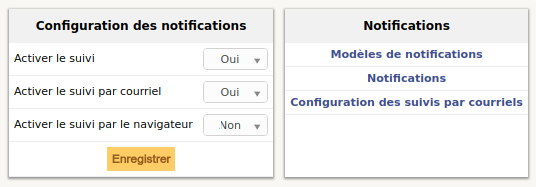
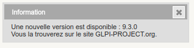
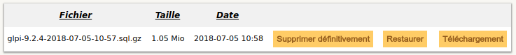
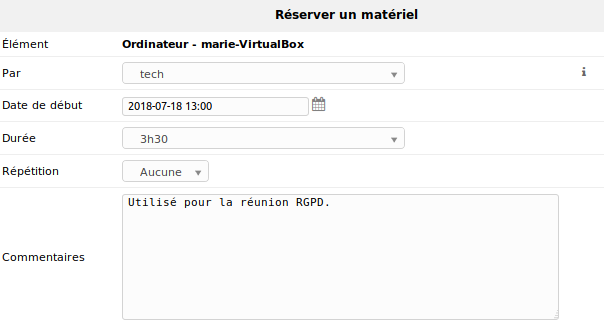
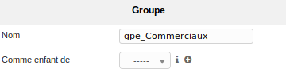
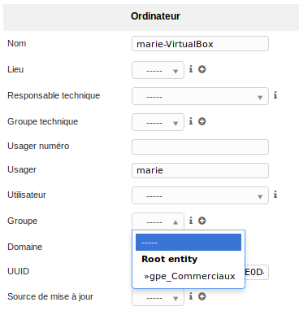

Gestion générale
Activation des notifications
Afin d'être averti d'éventuels problèmes survenant sur le réseau, il est possible d'activer les notifications par email. Aller dans Configurations > Notifications puis activer le suivi et le suivi par courriel. L'intitulé "Configuration des suivis par courriels" apparaît afin de pouvoir entrer le mail de destination.

Nouvelle version de GLPI
Il est possible de savoir directement sur l'application si une nouvelle version de GLPI est disponible.
Pour cela, se rendre dans Administration > Maintenance et cliquer sur "Vérifier si une nouvelle version est disponible".

Sauvegarde des données
De plus, il est possible sous ce même onglet de faire la sauvegarde de la base GLPI afin de garder une trace de l'état actuel de l'inventaire. Pour ce faire, sélectionner l'intitulé "Sauvegarde SQL" ou "Sauvegarde XML".

Fichiers de log
Certaines phases du déploiement de GLPI/FusionInventory peuvent nécessiter de consulter les fichiers de log. Les fichiers relatifs à GLPI se trouvent dans /var/www/glpi/files/_log. Ceux de FusionInventory sont placés dans /var/log/fusioninventory-agent. Les logs concernant Apache peuvent également s'avérer utiles et sont placés dans /var/log/apache2.
Gestion financière des équipements
GLPI propose une gestion financière et administrative complète des machines. Il est possible de renseigner le type d'amortissement ou encore les durées des garanties ou les numéros de facture. Pour cela, se rendre dans le Parc, sélectionner une machine et dans l'onglet Gestion activer le suivi financier et administratif. Les factures associées à cet équipement peuvent être enregistrées dans l'onglet Documents de la machine, en précisant la rubrique, qu'il faudra au préalable ajouter dans Configuration > Intitulés > Gestion > Rubrique des documents. Le fichier est alors enregistré dans le dossier correspondant à son extension sous /var/www/glpi/files.
Gestion des prêts de matériel
Les équipements gérés par l'inventaire peuvent être réservés. Pour autoriser la réservation, se rendre sur l'équipement souhaité et dans l'intitulé "Réservations" y activer le prêt. Le paramétrage d'un prêt s'effectue sous l'onglet Gestion > Réservations.

Gestion des groupes
En plus de créer des entités qui sépareront les ordinateurs de chaque site, il est possible de créer des groupes afin de faciliter le déploiement d'applications particulières à un domaine. Pour cela, se rendre dans Administration > Groupes et paramétrer le groupe.

Ainsi, pour affecter un ordinateur à un groupe, consulter la fiche de l'ordinateur et l'associer au groupe souhaité.
